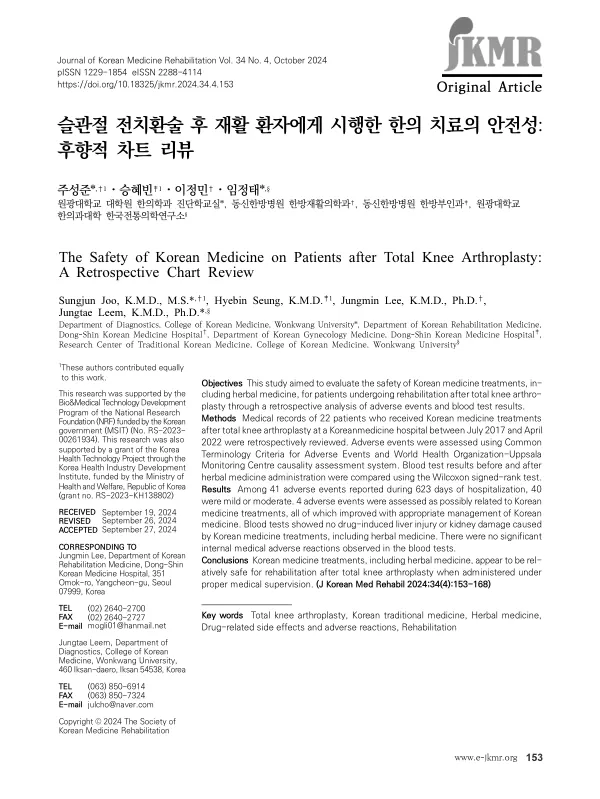

The Safety of Korean Medicine on Patients after Total Knee Arthroplasty: A Retrospective Chart Review
Joo S, Seung H, Lee J, Leem J
Journal of Korean Medicine Rehabilitation 34(4):153-168

첫 장 · 오픈액세스First page · open access
논문 소개Summary
슬관절 전치환술을 받은 환자는 수술 뒤 재활이 필요하고 그 과정에서 한의 치료를 함께 받는 경우가 많습니다. 그런데 수술 직후의 환자에게 한약을 쓰는 것이 안전한지에 대한 자료는 부족합니다. 고령이고 여러 약을 함께 먹는 환자가 많아 간과 신장에 부담이 될 수 있다는 우려가 따라다닙니다. 이 연구는 그 우려를 진료기록으로 확인한 것입니다.
한 한방병원에서 2017년 7월부터 2022년 4월까지 슬관절 전치환술 후 한의 치료를 받은 환자 22명의 의무기록을 후향적으로 검토했습니다. 이상반응은 미국 국립암연구소의 이상사례 공통용어기준으로 중증도를 매기고 세계보건기구-웁살라 모니터링센터 인과성 평가체계로 치료와의 관련성을 따졌습니다. 한약 복용 전후의 혈액검사 결과는 윌콕슨 부호순위 검정으로 비교했습니다.
입원 623일 동안 보고된 이상반응은 41건이었고 그 가운데 40건이 경증 또는 중등증이었습니다. 한의 치료와 관련이 있을 수 있다고 평가된 것은 4건이었으며 모두 적절한 한의 처치로 좋아졌습니다. 혈액검사에서는 한약을 포함한 한의 치료로 인한 약인성 간손상이나 신장 손상이 확인되지 않았고, 내과적으로 의미 있는 이상 반응도 없었습니다.
이상반응을 세는 것에서 그치지 않고 중증도와 인과성을 표준 도구로 평가한 것이 이 연구의 방식입니다. 이상반응이 몇 건 있었다는 말만으로는 그것이 치료 때문인지 수술 후 경과인지 알 수 없습니다. 수술 직후라는 상황에서는 이 구분이 특히 중요합니다.
한계는 22명이라는 적은 수입니다. 드물게 나타나는 이상반응은 이 규모로 잡히지 않습니다. 한 병원의 기록이고 대조군이 없으므로 한의 치료를 받지 않은 환자와 견줄 수도 없습니다. 그래서 결론도 조심스럽게 적혀 있습니다. 적절한 의학적 관리 아래 쓰이면 비교적 안전해 보인다는 것이지, 안전하다고 단정한 것이 아닙니다.
Patients undergoing total knee arthroplasty need rehabilitation afterwards, and many receive Korean medicine treatment alongside it. Yet data on whether herbal medicine is safe in patients so soon after surgery are scarce, and concern persists about hepatic and renal burden given that many are elderly and taking multiple drugs. This study examined that concern through clinical records.
Records of 22 patients who received Korean medicine treatment after total knee arthroplasty at a Korean medicine hospital between July 2017 and April 2022 were reviewed retrospectively. Adverse events were graded with the Common Terminology Criteria for Adverse Events and assessed for relatedness using the WHO-Uppsala Monitoring Centre causality system. Blood test results before and after herbal medicine administration were compared with the Wilcoxon signed-rank test.
Across 623 days of hospitalisation, 41 adverse events were reported, 40 of them mild or moderate. Four were assessed as possibly related to Korean medicine treatment, and all improved with appropriate management. Blood tests showed no drug-induced liver or kidney injury attributable to Korean medicine treatment including herbal medicine, and no internal medical adverse reactions of significance.
The method matters here: rather than merely counting adverse events, the study graded severity and assessed causality with standard instruments. A bare count cannot distinguish events caused by treatment from the ordinary postoperative course — a distinction that matters especially in the period immediately after surgery.
The limitation is the small number of patients. Rare adverse events will not surface at this scale. Records come from a single hospital and there is no control group, so no comparison with patients not receiving Korean medicine is possible. The conclusion is worded accordingly: the treatment appears relatively safe when administered under proper medical supervision — not that it is safe.
인용Cite
Joo S, Seung H, Lee J, Leem J. The Safety of Korean Medicine on Patients after Total Knee Arthroplasty: A Retrospective Chart Review. Journal of Korean Medicine Rehabilitation. 2024;34(4):153-168. doi:10.18325/jkmr.2024.34.4.153